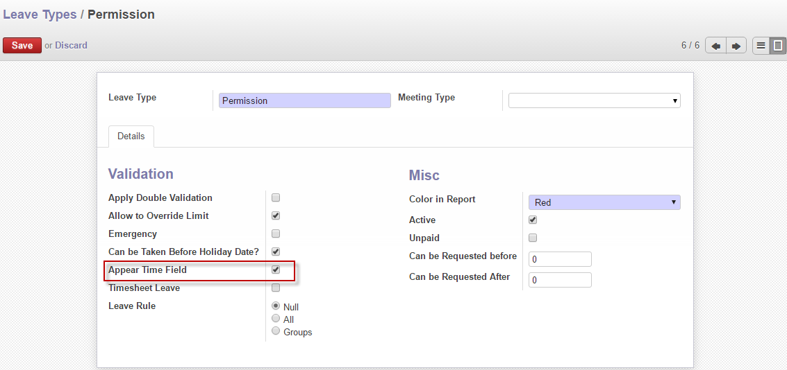
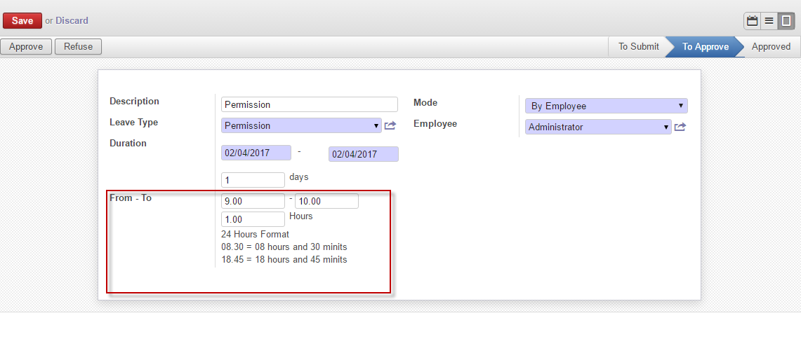
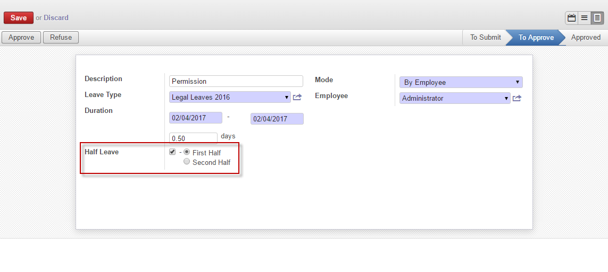
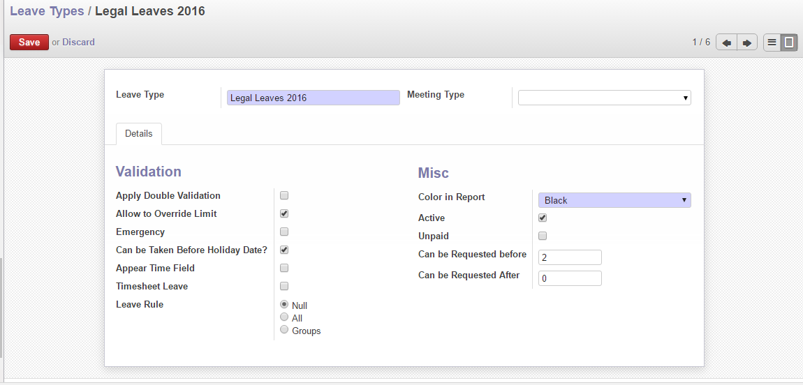
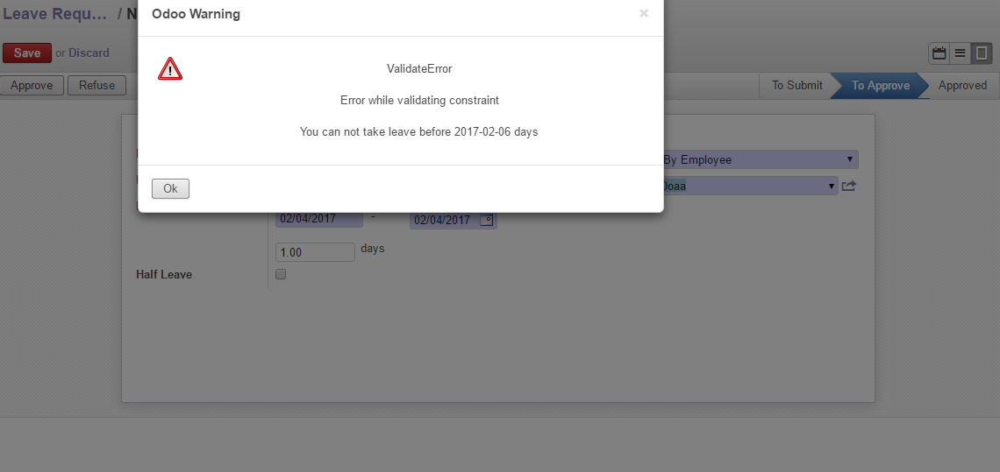
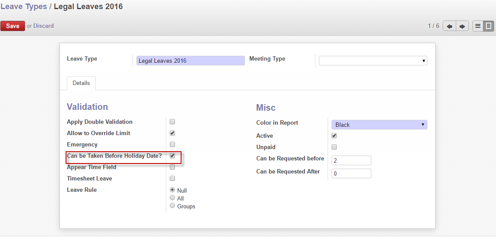
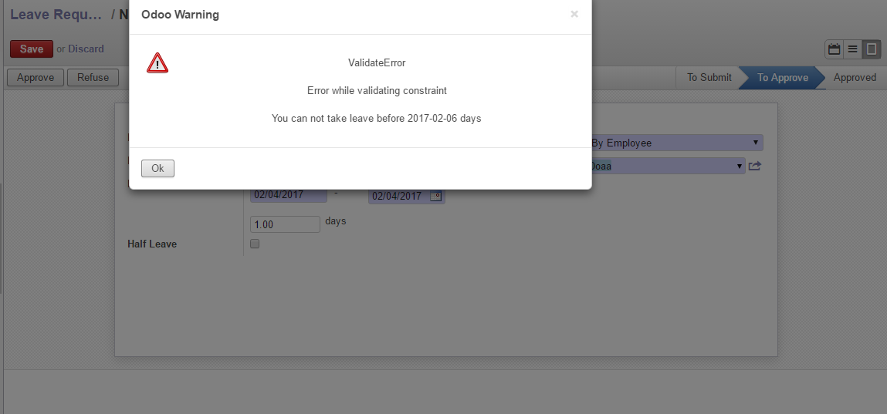
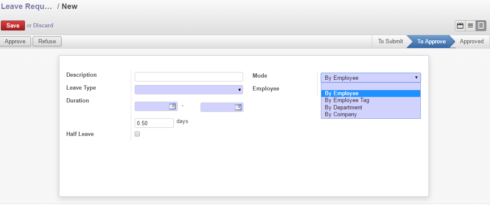
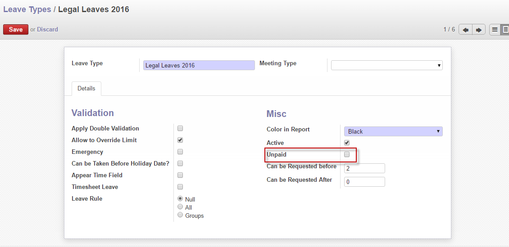

1. Every Manager can see his team leave requests only,
2. Officer can make first approval only, second approval should be managed by HR managers
3. HR Managers can see all leave requests
4. Managing Leave with time factor (hours and minutes) like Permission leaves,
5. Managing half day requests
6. Defining leave conditions, Can be requested before specific days number of leave date (Ex. Legal Leaves), also can be requested after specific days Ex. Emergency leaves)
7. Controlling starting valid date for specific leaves per employees (to be taken after under test period )
8. Marking many leaves as unpaid leaves
9. ...etc
Our module adds Appear Time Field option in Leave configuration form, So you can define which leave type should have that option by checking it like Permission Leaves

The time field From-To will be appeared automatically when employee choose leave type which controlled by hours or minutes,
We changed field datetime of odoo default to be date only

Half day leave option is appeared for leaves which controlled by days, while time field will not be appeared,
Employee has the option to choose which half of day he wants to take first or second half As that will be effect when system try to calculate delay and applying attendance penalty rules (by using another module Elsaka_penalty_Calculation
When user check half day option, system will deduct 0.5 day from his balance automatically

In leave Configuration Form, you can define Can be requested before & Can be request After
We consider that number which you will enter as days

System will prevent employees to take leave not matching defined conditions

In contract Form, you can define the date when the employee can start take all leaves type, After that, you can mark which leaves should not take before that date, and which ones will not follow that condition

System will not allow to any employee to take the leaves which should not take before holiday date, and will give him a warning message.

HR Manager can manage leaves for specific group or for all company, by using our module which add Mode (by Employee, By Department, by Tag
system will create separate leaves for every employee and deduct from his balance, it mainly used for managing public leave easily


Video Link:- https://goo.gl/geXmLW
Video Link:-
Video Link:-
Video Link:-
Video Link:-
Video Link:-
Video Link:-
Video Link:-
Video Link:-
Video Link:-
Email: Eng.elsaka09@gmail.com
Website:- www.Elsaka.com